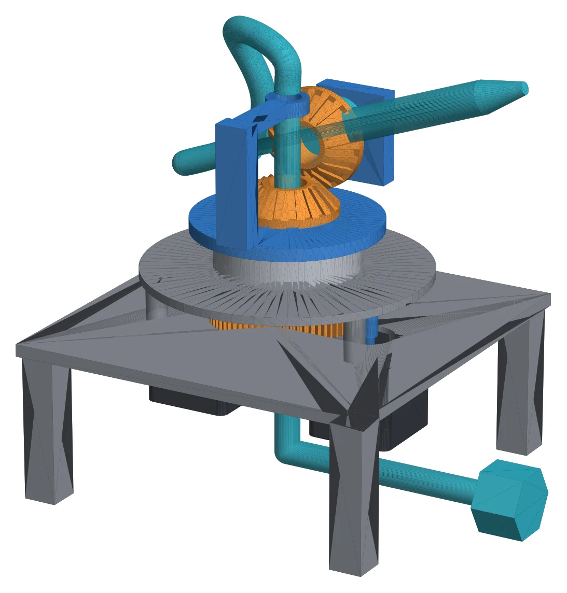
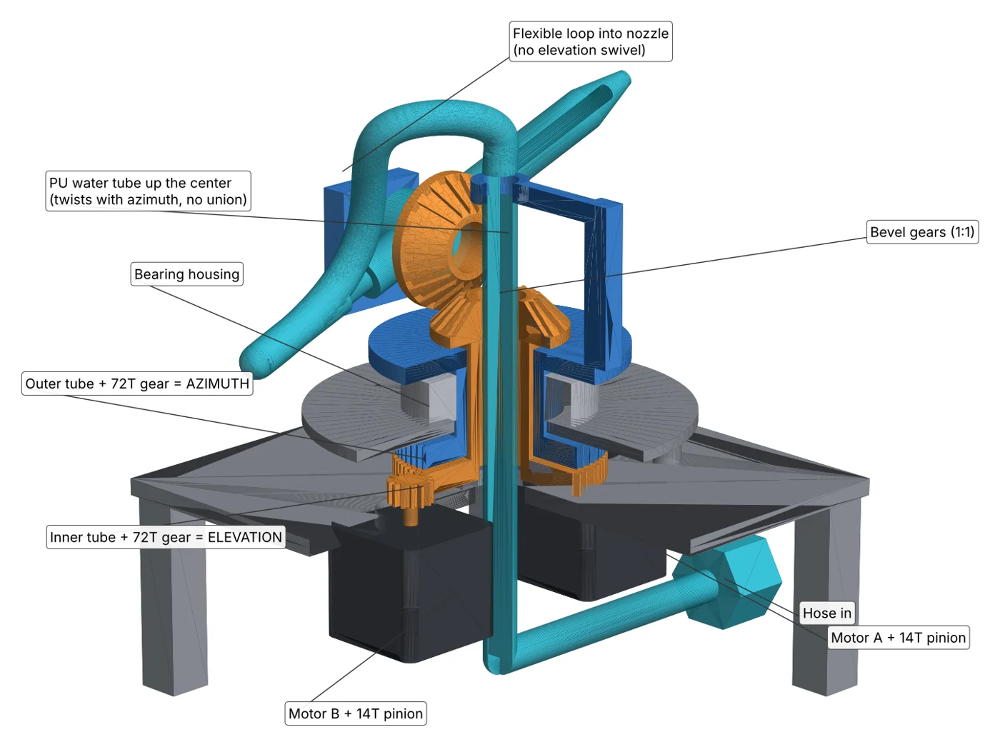

Embedded vision · motion control · San Diego
Machines that see, decide, and move.
Crux Apps builds embedded Linux and computer-vision systems, from camera pipeline to motor driver. The current flagship is Sentry: a garden-hose turret that finds its target and fires, with no wires on the moving head.

SENTRY · REV B · CADFeatured project
Sentry: a 360° water turret
Sentry watches the yard with a pair of wide-angle cameras, picks out animals with an on-device neural network, and puts a jet of water on them. The motors stay in the base, so it can spin forever with no slip ring and no electronics on the turret head.
360° vision
Two back-to-back fisheye cameras on a Raspberry Pi 5 with an AI accelerator cover every direction, day and night.
Coaxial differential drive
Nested tubes carry azimuth and elevation up the center. The firmware mixes both motors, so the head needs no power or data.
Pulsed water
A fast solenoid valve chops mains-pressure water into short, high-speed slugs and fires on the CV system's command.

CUTAWAY · COAXIAL STACKSpec sheet
| Azimuth travel | Continuous (∞) |
|---|---|
| Elevation | −15° to +60° |
| Drive | 2 × NEMA 17, 2:3 gearing |
| Resolution | 3.333 steps/° (1/4 µstep) |
| Kinematics | Marlin MARKFORGED_YX |
| Controller | BTT SKR Mini E3 V2.0 |
| Vision | Raspberry Pi 5, 2 × 200°+ cameras |
| Water | 60 psi mains, 2 mm jet, ~25 m/s |
| Head wiring | None |
Build log
How it got here
Slip-ring prototype
The first version put the elevation motor on the turret head and fed it power and data through a slip ring. It worked, but the slip ring was the weak point.
Motors move to the base
A coaxial differential replaced the slip ring. The inner tube drives elevation through bevel gears, and firmware compensates for azimuth, so the head carries no electronics.
No rotary unions
A single flexible tube runs up the center and loops into the nozzle, removing two leak points.
Printer firmware, turret kinematics
Marlin on a 3D-printer controller board, configured with Markforged kinematics so G-code speaks azimuth and elevation directly.
Add your latest milestone here
Night vision, fisheye dewarping, target lead for moving animals…
Services
What Crux Apps builds
Independent engineering for products that need cameras, compute and motion to work together in the field.
Embedded Linux on NVIDIA Jetson
Production embedded Linux on Jetson Xavier and Orin, including ConnectTech Rogue carrier boards.
Camera and vision pipelines
Camera capture and processing pipelines with on-device detection and tracking.
Kiosk and instrument systems
Kiosk-style instrument systems that boot straight into the app and keep running in the field.
Fleet management and backends
Managing fleets of deployed devices, and the Django services behind them.
Contact
Have a machine that needs eyes?
Tell me about the hardware, the camera and what it has to do. Add your response-time promise.